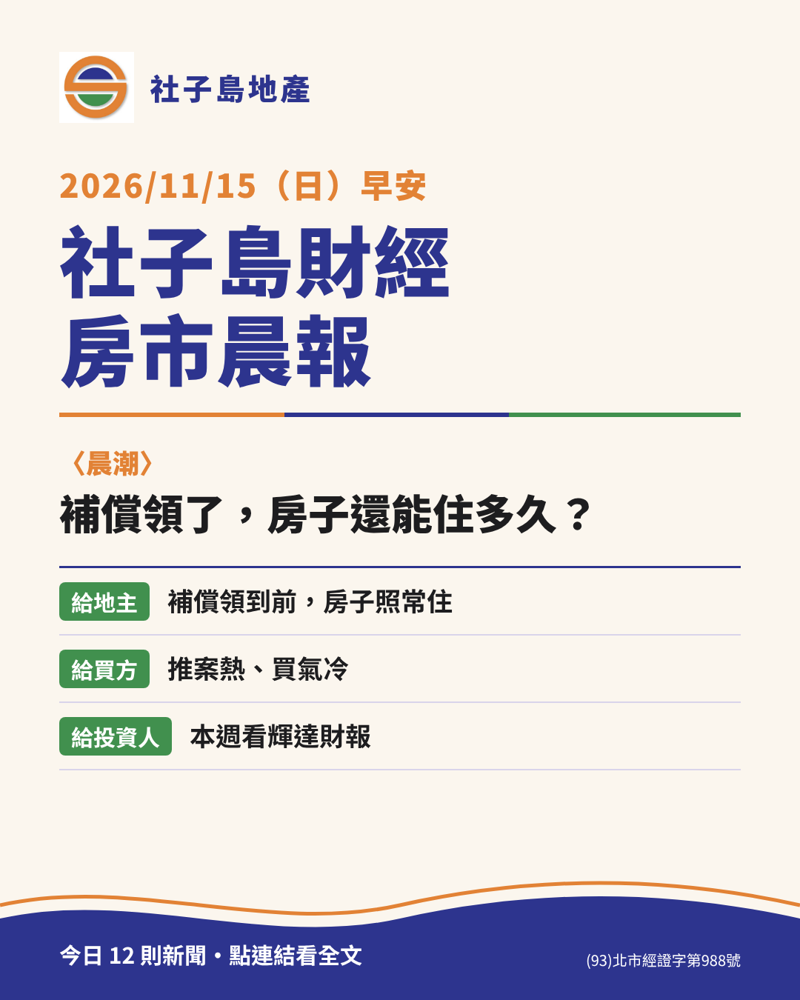

2026/11/15 (日) 早安
社子島財經房市晨報｜補償領了，房子還能住多久？
今日 12 則財經與房市新聞，依主題分成 4 類，社子島、主商圈與台北市的新聞排在最前面。點標題就能開啟原文。
〈潮汐表〉今天的三道潮水
- 給地主補償領了，權利才終止；領到之前，房子照常住。之後依市府通知限期搬遷，不是隨時被趕。
- 給買方10月預售推案破千億，但每週平均來客約10組、成交不到1組，推案熱、買氣冷，看屋時可以多比較。
- 給投資人台股上週大漲逾10%，本週焦點是輝達18日清晨財報；投顧預估區間震盪。
〈晨潮〉一週回顧
補償領了，房子還能住多久？
昨天在公園，阿公望著河邊那排老厝問我們：「若是補償領了，阮這間厝閣會使住到底時？會予人隨時趕出去無？」先說結論：不會隨時被趕。法律替這件事畫了一條清楚的線，這條線叫「補償費發給完竣」。
《土地徵收條例》第21條寫得很白：被徵收的土地和房子，所有權人的權利義務，在應受的補償費發給完竣的時候才終止；補償費發完之前，原來住的人可以繼續照原來的方式使用。換句話說，錢還沒到您手上，房子還是您的家，政府也不能先進來施工。
補償發完之後呢？依同條例第28條，主管機關會通知權利人或使用人，在一定期限內遷移；逾期不搬，才會依法強制執行。所以順序是：領補償 → 收到書面通知與期限 → 在期限內搬。不是補償一入帳，隔天就有人來敲門。實際期限寫在通知書上，請以收到的公文為準。
對社子島，還有一層：市府對外的說法是「戶戶安置、分期分區、先安置後拆遷」，也就是先把住的地方安排好，再拆舊厝。安置怎麼排、誰先誰後，要等計畫核定、公告以後才會有細節；計畫目前仍在內政部審議，尚未公告。現在能做的，是把戶籍、門牌、房屋稅籍這些住在這裡的證明整理好（11/5 我們談過），將來安置資格用得到。
補償領了以後：記住三個順序
- ① 補償費發給完竣前：權利義務還在，可以照原來方式繼續住、繼續用（《土地徵收條例》第21條）
- ② 補償費發完後：主管機關書面通知，在期限內遷移；逾期才依法強制執行（第28條）
- ③ 社子島市府說法：戶戶安置、分期分區、先安置後拆遷；細節以計畫核定與公告為準
今天是週日，也把這一週陪阿公走過的路回顧一遍：週一，地賣了，補償歸公告時登記的所有權人；週二，協議價購和土地徵收，一個是簽約、一個是公告；週三，區段徵收前的預約合建，標的未定，契約要寫清楚；週四，區段徵收的六道關，社子島走到第三關；週五，補償算太低，公告期間內用書面異議；週六，菜園果樹也有補償，但公告後別搶種。今天，補償領了，房子照常住到通知搬遷。
這一個多星期，阿公的問題一個接一個，都是區段徵收的正事。從明天起，〈晨潮〉要換個節奏：一週四、五天，我們陪您在島上走走，看夕陽、認老地名、聽潮水，也到北士科、關渡、洲美繞一圈；遇到大事，我們還是第一時間用白話講清楚，更深的分析放在雙週報和浮汕老人社論。明天第一站，是阿公年輕時天天看的那片夕陽。往下滑，有本週輝達財報與房市推案熱、買氣冷的消息；最後在〈廟口泡茶區〉，我們等您來電。
——社子島地產團隊
主商圈：社子島・北士科・關渡洲美平原2 則
黃仁勳請辭後，媒體比較全台三大科技園區周邊房市，討論「輝達宅」熱度能否延續；北市府13日已說明北士科總部地上權履約正常（見昨日）。社子島計畫仍在內政部審議，關渡洲美平原本週無新進度
房市走向2 則
10月住展風向球回升至37.5分、續亮黃藍燈，預售推案破千億創4月以來新高，但每週平均來客約10組、成交不到1組，推案熱、買氣冷
稅務與法律實務1 則
地價稅以每年8月31日登記的所有權人為納稅義務人，之後才賣掉土地，當年稅單仍寄給原所有權人；買賣雙方約定分攤屬私權約定。今年地價稅11月30日截止
今日財經大事7 則
週末休市。台股上週單週大漲逾10%、漲幅全球第一，投顧預估本週區間震盪；焦點是輝達台灣時間18日清晨公布財報，黃仁勳請辭後輝達一週市值蒸發6,572億美元，市場資金出現「賣輝達、轉台積」
〈阿公講古〉
週日下午，阿公照例爬上堤防。風從河口吹過來，有點涼了，孫子幫他把外套拉鍊拉上。
「錢猶未提著，厝就猶是阮的，」阿公點點頭：「阮這世人上驚的，毋是搬厝，是無講清楚就予人趕。有一條線畫予清楚，心就定矣。」
孫子說，這幾天問的都是補償、異議、抵價地，阿公聽得頭都昏了。阿公笑出聲：「是你頭昏，毋是我。」
太陽慢慢往觀音山那邊落下去，河面一片金黃。阿公看了很久，忽然問：「阮少年時，收工就坐佇福安碼頭遐看日頭落山。這馬猶有人專工來看無？欲看，幾點去上媠、坐佗位上好？」
阿公的問題，我們明天回答。
〈廟口泡茶區〉
阿公從堤防下來，廟口榕樹下的茶剛好泡開。這一週聊了這麼多補償和徵收，哪一件您還想再問清楚，帶著問題來坐坐。
這一週聊了買賣、租賃、合建、區段徵收與市地重劃，哪一件最貼近您的心事？
也想問問您：您印象中島上哪裡看夕陽最美？打個電話告訴我們，說不定明天就寫進晨報。
不急著成交。我們是守在堤邊的人，守著每一塊土地的權益，直到把它交到願意耕耘它的人手上。
📞 歡迎先來電 0922-252-969先通個電話聊聊，再約時間來廟口喝茶。
 掃描 QR code，加 LINE 好友LINE ID：@shezidao💬 加 LINE
掃描 QR code，加 LINE 好友LINE ID：@shezidao💬 加 LINE
社子島地產團隊｜service@shezidao.com.tw
台北市士林區延平北路九段288號
週一至週六 9:30–18:00（週四 9:30–13:30），週日公休📞 來電 0922-252-969
本站由社子島地產開發有限公司經營，為民間不動產資訊網站，非臺北市政府官方網站；政府公告請以臺北市政府與地政局網站為準。
本期新聞由社子島地產團隊自經濟日報、中央社、中天新聞網、聯合新聞網、自由財經、鉅亨網、Yahoo奇摩新聞、蕃新聞、FTNN新聞網 等來源收集，標題照原文，點擊即可開啟原始報導；法規說明僅供參考，實際權利義務以主管機關公告為準。〈晨潮〉〈阿公講古〉為本團隊之參考意見，不構成投資建議，亦不代表支持任何候選人。〈阿公講古〉的阿公，是我們依島上長輩的身影寫成的人物。